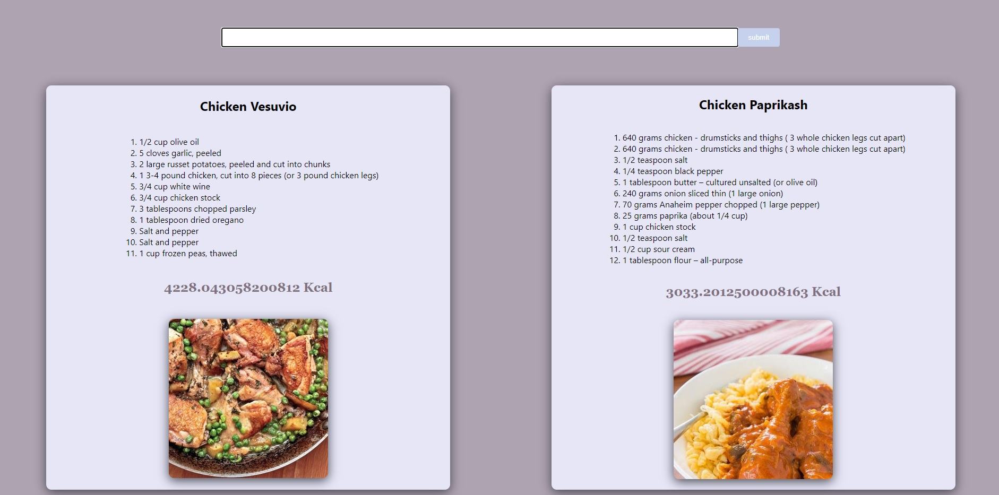

Recipes website
This was one of my first projects using React framework.
I used a free API from https://www.edamam.com/ which offered me a wide variety of recipes.
The app is pretty simple but offered me the opporunity to get more familiar with React and its features.
The users can search for recipes by a keyword, then a list of them is presented wit the opportunity to check the detailed recipe on the original website if the image is clicked.
GitHub Repository
Technologies:
- - Javascript
- - API's
- - ReactJS
- - HTML/CSS
Homepage
